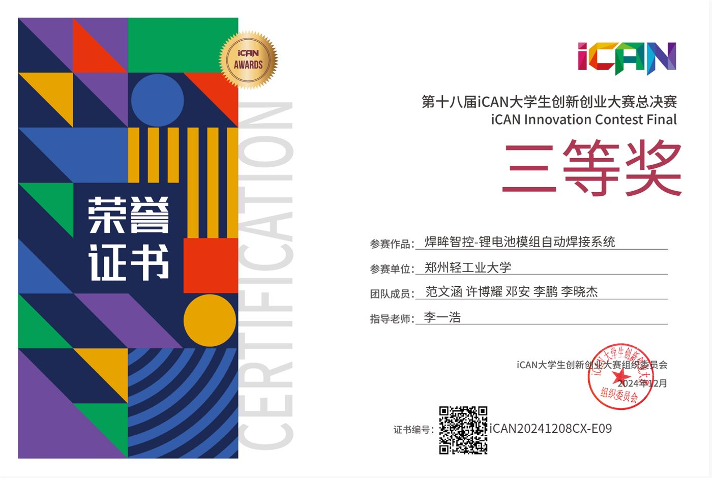
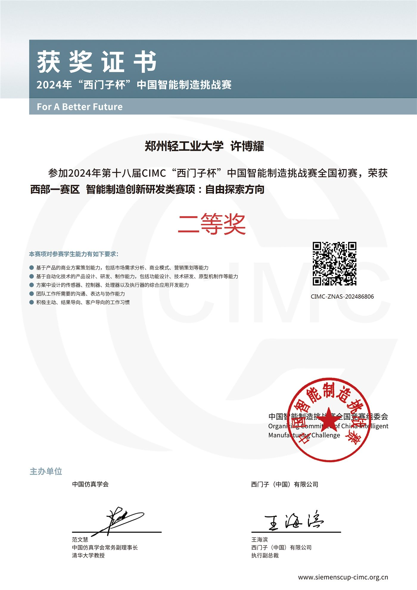
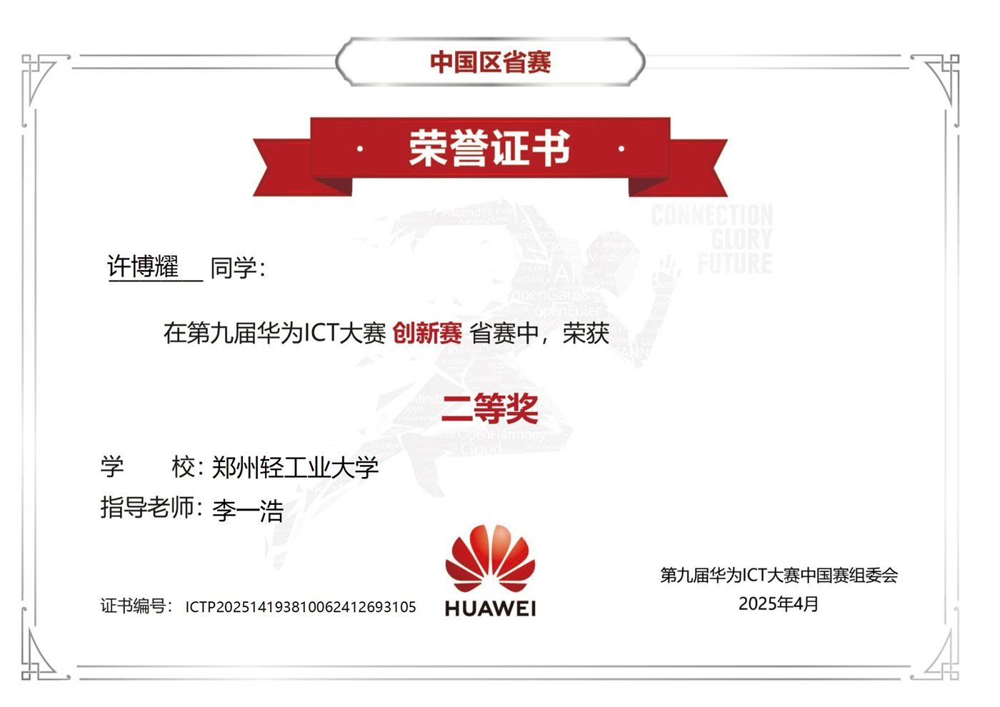
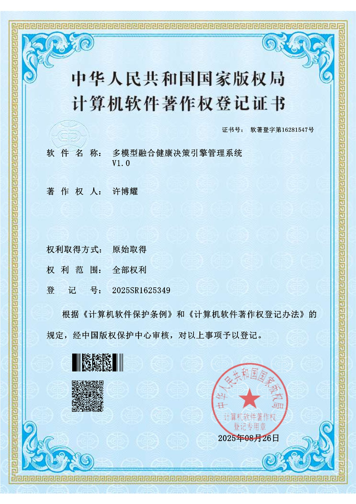
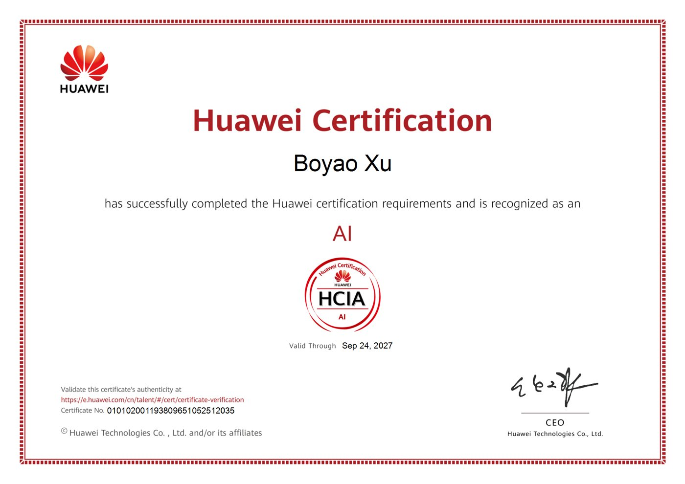

我的工程开发能力较为全面， 项目经历覆盖 STM32 固件开发、工业视觉、结构设计与 AI 应用开发等，主线聚焦嵌入式软件工程。
能熟练使用 Claude Code、Git 等工具，熟练使用 Python、嵌入式 C 语言，有较好的编程风格， 遵守代码规范。我也经常关注各种新技术的资讯，了解 AI 动向，保持对新技术的好奇，对新技术的应用场景有一定敏感性。
在参与不同项目的开发过程中，我对不同领域的技术架构都具备一定认知，并且学习能力较强、上手快， 因此能快速掌握新的技术栈与开发规范；面对复杂问题也能进行系统性思考，并积极结合调研来提出有效解决方案。
3个独立开发项目 · 3个实验室项目 · 1个实习项目
企业级固件实践：五层单向依赖架构 + Active Object 业务无共享锁框架 + OOP-in-C 驱动体系 + 七级自动初始化 + 声明式低功耗引擎 + IAP BootLoader（Ymodem + CRC32，App 位于 0x0800C000）。借鉴 Linux 内核 / AUTOSAR 的工程思想，落地到一颗 512KB Flash 的 MCU。
开源的潮汕话语音数据收集 / 标注平台：双通道采集 → VAD/滤波/筛选管线 → 自训 Paraformer ASR → 人工审核标注 → 潮语词典沉淀，数据集生产效率提升 3 倍。
面向老年人的「语音主交互 + 按键辅助」AI 终端：终端 BLE 调起手机 Agent 操控 App，融合自训方言 ASR。已完成 ESP32 原型打通链路，正规划以 STM32 技术栈重启。
全流程自动化产线（分选 / 绝缘 / 组装 / 焊接 / 码垛）。焊接模块：视觉识别 56% → 98.5%、随动焊接预研、Unity 数字孪生与焊后良率检测；产线整合：移料机构重构、PLC 控制架构与 BOM 输出。
低成本晶圆明场检测 MVP：复现浙大论文算法，图像裁切 → 频域滤波 → 霍夫线矫正（正态分布拟合优化）→ 同态滤波 → 金模板差分缺陷提取，打通晶圆检测工作流。
参与五轴机床数字孪生监测：主轴功率 / 温度 / 编码器数据采集，MQTT → 华为云 IoTDA → Flask 后端 / React 前端，APS 数字孪生热图告警，微调大模型提供故障维修问答。
查看 →延康科技实习：Dify 搭建健康咨询智能体（3 Sub-Agent 集成 + RAG 个性化健康档案），接入微信小程序与公司 APP；本地大模型部署（VLLM / Ktransformers）。
查看 →STM32F411 + FreeRTOS + LVGL：五层单向依赖架构、Active Object 业务无共享锁、OOP-in-C 驱动体系、七级自动初始化、声明式低功耗引擎、SPI-DMA 渲染管线、单槽双保险 IAP BootLoader。
双通道语料收集 + 自动化处理管线（VAD/滤波/筛选/初版 ASR）+ 人工标注平台，数据集生产效率提升 3 倍；基于 FunASR 微调潮汕话 ASR。Cane 终端完成 ESP32 BLE 原型，规划以 STM32 技术栈重启。
基于 Dify 搭建健康咨询智能体（3 Sub-Agent 集成 Main Agent）：对话中自动结构化总结健康信息、元数据绑定、RAG 长期记忆与精准召回；负责本地大模型部署（VLLM / Ktransformers）并接入端侧智能体；接入微信小程序与公司 APP。
焊接模块：视觉识别成功率 56% → 98.5%，完成「随动焊接」预研，Unity 数字孪生与 ModelArts 焊后良率检测，获 iCAN 全国三等奖；产线整合：Fusion 360 移料机构重构（非标件转标准件）、PLC 控制架构与工业组网、绝缘模块结构设计，输出 BOM 表并落地实物。
复现并优化晶圆明场缺陷检测算法：图像矫正（傅里叶变换 + 霍夫线 + 正态分布角度拟合）、同态滤波、金模板差分缺陷提取；参与视觉硬件选型。
搭建机床传感器采集 → MQTT → 华为云 IoTDA → Flask → React 数字孪生全链路；APS 热图告警与机床运动同步；微调大模型提供故障维修问答。
比赛获奖与专业认证，点击可放大查看。





按嵌入式开发的能力维度组织，每一项都来自上面项目的实际实现。
欢迎通过以下渠道联系与交流，更多细节可邮件索取。